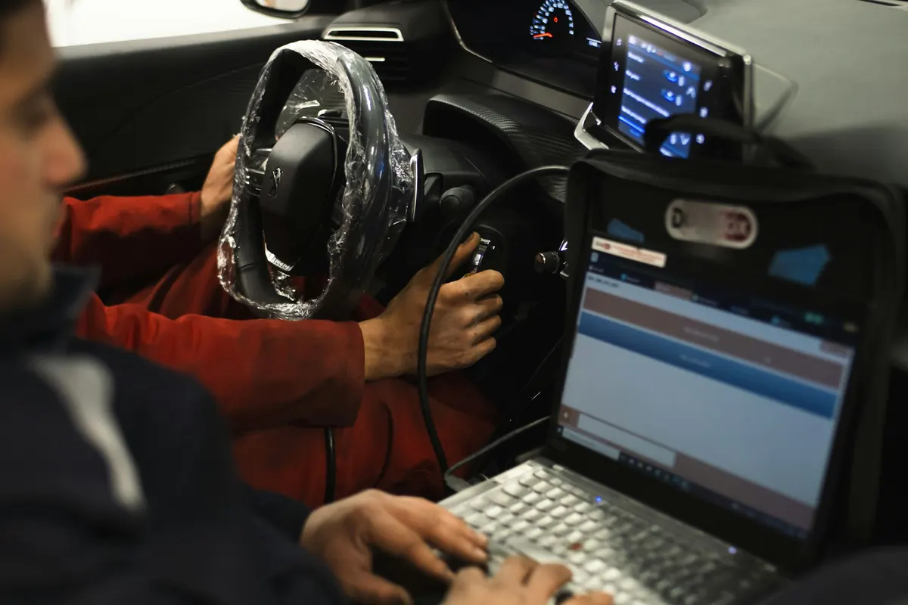
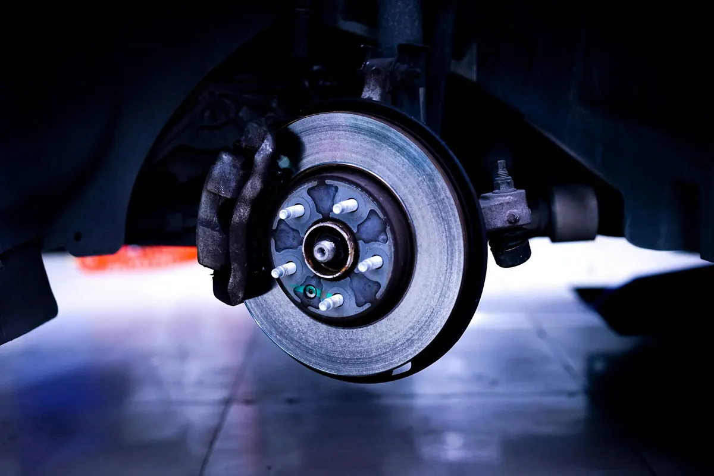
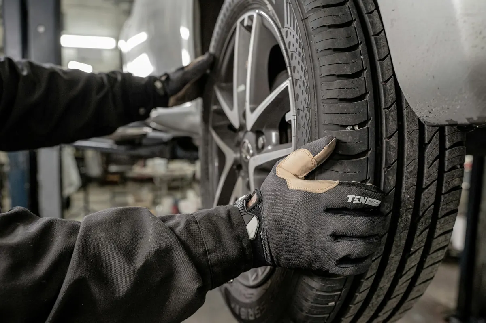
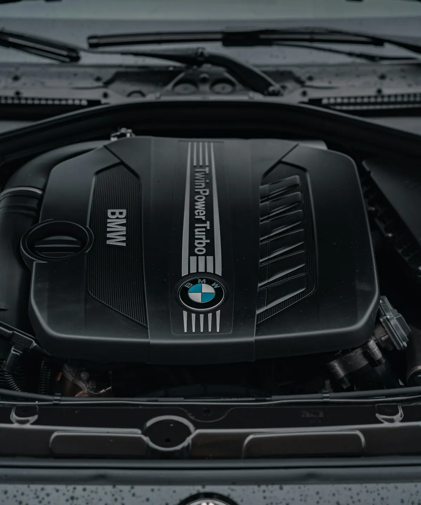
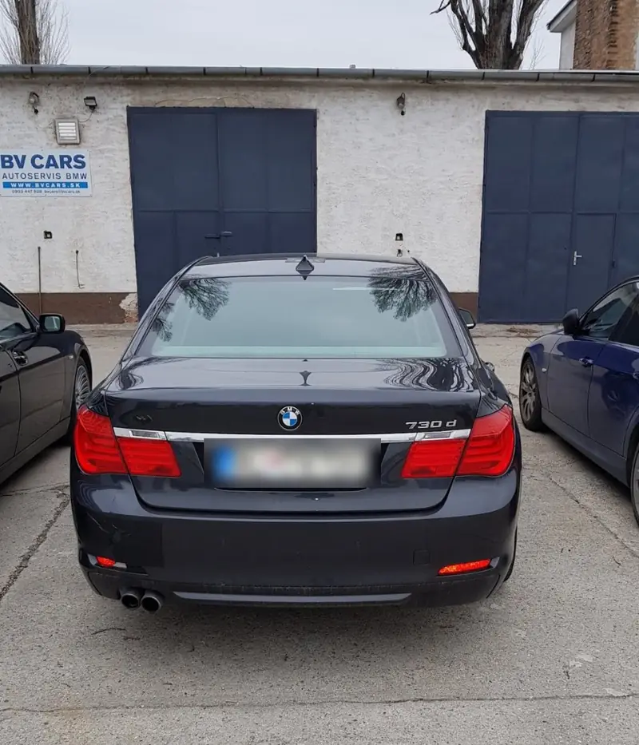
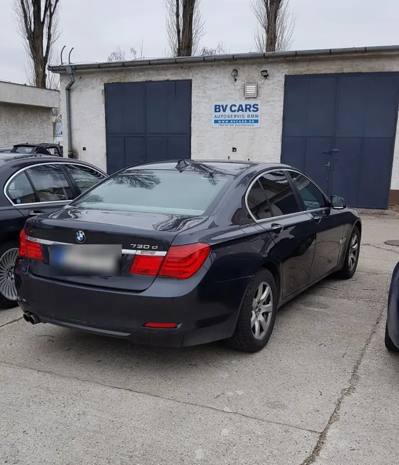
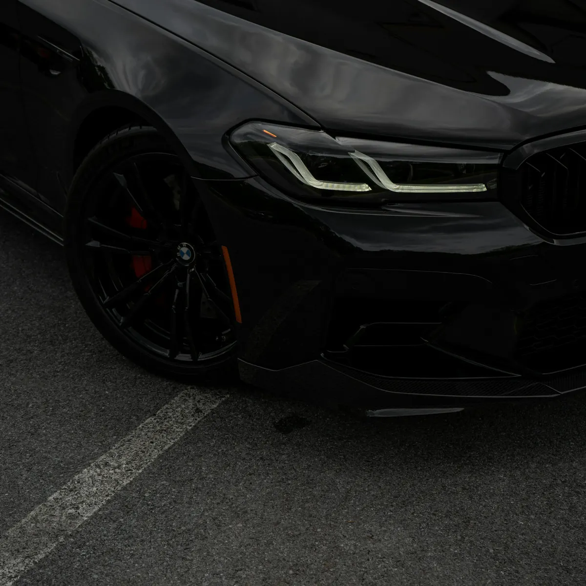

01Autodiagnostika BMW
Originálne diagnostické prístroje BMW, pravidelne online aktualizované.
- aktualizácie riadiacich jednotiek
- aktualizácie navigačných máp
- všetky úkony podľa požiadaviek BMW
Originálna diagnostika BMW, servisné prehliadky so zápisom do histórie BMW, automatické prevodovky aj xDrive. Skúsenosti z autorizovaného servisu BMW od roku 2004.
Pracujeme s najmodernejšími profesionálnymi nástrojmi a prvotriednou servisnou technikou. Naším cieľom je kvalitná oprava, servis a vaša bezpečnosť.

01Originálne diagnostické prístroje BMW, pravidelne online aktualizované.
Pravidelný servis podľa údajov vyčítaných z kľúča vozidla – oleje, filtre, brzdová kvapalina, zápis histórie na portál BMW.
Čo presne urobímeOlej a filter automatickej prevodovky, olej v prevodovkách a rozvodovkách, xDrive s nastavením lamiel diagnostikou.

04Kompletné mechanické opravy vozidla.

05Prezutie, vyváženie pneumatík až po vyrovnávanie diskov.
Servisné úkony robíme podľa údajov z kľúča vozidla – rovnako, ako ich predpisuje BMW. Záznam o servise sa zapíše do histórie vozidla, takže hodnota auta pri predaji nestráca.
Objednať prehliadku


BV Cars s.r.o. bola založená v roku 2012 a sídli v Bratislave. Odbornú kvalifikáciu a skúsenosti sme od roku 2004 získavali v autorizovanom servise BMW a pravidelne sa zúčastňujeme špecializovaných BMW školení.
Prax v odbore opravy vozidiel máme viac ako 20 rokov. Ku každému zákazníkovi pristupujeme individuálne, podľa jeho požiadaviek a potrieb – zodpovedne a starostlivo.
Áno. Zaoberáme sa komplexným servisom prémiových vozidiel BMW a MINI.
Áno. Po vykonaní servisných úkonov zapíšeme históriu na portál BMW, nastavíme vo vozidle nový servisný interval a ak ju vozidlo má, spravíme zápis do elektronickej servisnej knižky.
Áno. Meníme olej v automatickej prevodovke aj s filtrom, olej v prevodovkách a rozvodovkách a olej v prevodovke xDrive vrátane nastavenia lamiel diagnostikou. Súčasťou je zmazanie adaptačných hodnôt, kontrola softvéru a jeho prípadná aktualizácia.
Originálne diagnostické prístroje BMW, ktoré sú pravidelne online aktualizované. Aktualizujeme riadiace jednotky aj navigačné mapy.
Áno. Kompletnú službu od prezutia cez vyváženie pneumatík až po vyrovnávanie diskov.
Áno, vozidlo pripravíme na technickú (STK) aj emisnú kontrolu (EK).
Pondelok až piatok od 8:00 do 17:00. Servis je na Trnavskej ceste 102/B, 821 01 Bratislava-Ružinov.


Zavolajte a dohodneme termín – Po až Pia od 8:00 do 17:00.